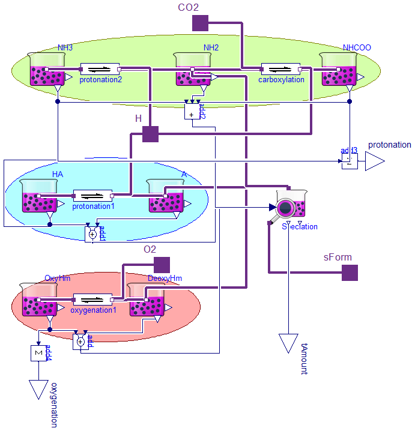
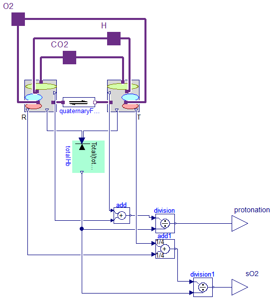
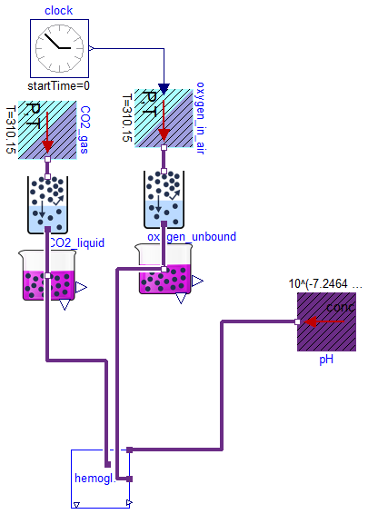
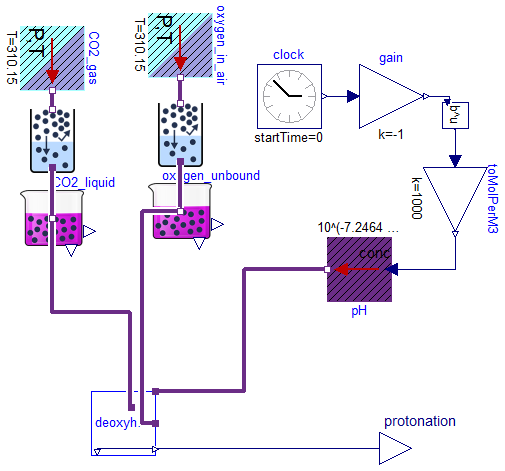
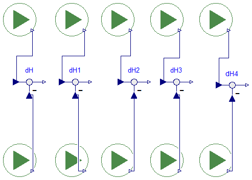

Information
Extends from Modelica.Icons.UnderConstruction (Icon for classes that are still under construction).
Package Content
Model of hemoglobin space-structure form (can be parametrized as relaxed or tensed)

Information
[1] Morrow J, Matthew J, Wittebort R, Gurd F. Carbon 13 resonances of 13CO2 carbamino adducts of alpha and beta chains in human adult hemoglobin. Journal of Biological Chemistry 1976;251:477-84.
[2] Bauer C, Schröder E. Carbamino compounds of haemoglobin in human adult and foetal blood. The Journal of physiology 1972;227:457-71.
[3] Antonini E, Wyman J, Brunori M, Fronticelli C, Bucci E, Rossi-Fanelli A. Studies on the relations between molecular and functional properties of hemoglobin V. The influence of temperature on the Bohr effect in human and in horse hemoglobin. Journal of Biological Chemistry 1965;240:1096-103.
Parameters
| Type | Name | Default | Description |
|---|
| Boolean | isDependent | false | |
| Concentration | KA | 10^(-6.89 + 3) | dissociation coefficient for acid chains of subunit [mol/m3] |
| Concentration | Kz | 10^(-7.25 + 3) | valine 1 amino terminus dissociation coefficient of protonation to NH3+ [mol/m3] |
| Concentration | Kc | 10^(-8.35 + 3) | valine 1 amino terminus dissociation coefficient of protonation to NH3+ [mol/m3] |
| Concentration | KO2 | 0.000671946 | oxygen dissociation coefficient of hemoglobin subunit [mol/m3] |
Connectors
Modelica definition
model QuaternaryForm
"Model of hemoglobin space-structure form (can be parametrized as relaxed or tensed)"
parameter Boolean isDependent = false;
parameter Types.Concentration KA = 10^(-6.89+3)
"dissociation coefficient for acid chains of subunit";
parameter Types.Concentration Kz = 10^(-7.25+3)
"valine 1 amino terminus dissociation coefficient of protonation to NH3+";
parameter Types.Concentration Kc = 10^(-8.35+3)
"valine 1 amino terminus dissociation coefficient of protonation to NH3+";
parameter Types.Concentration KO2 = 0.000671946
"oxygen dissociation coefficient of hemoglobin subunit";
Components.Speciation Speciation(NumberOfSubunits=12);
Components.Substance OxyHm[4](
each solute_start=0,
each Simulation=Types.SimulationType.SteadyState,
isDependent={isDependent,true,true,true})
"Oxygenated subunit of hemoglobin tetramer";
Components.ChemicalReaction oxygenation1[4](
each nP=2,
each K=KO2);
Components.Substance DeoxyHm[4](
each Simulation=Types.SimulationType.SteadyState,
each solute_start=1e-08)
"Deoxygenated subunit of hemoglobin tetramer";
Modelica.Blocks.Math.Add add[4];
Interfaces.ChemicalPort_a O2;
Interfaces.ChemicalPort_a sForm;
Interfaces.ChemicalPort_a H
"hydrogen ion (proton)";
Components.Substance A[4](
each Simulation=Types.SimulationType.SteadyState,
each solute_start=1e-08)
"residual acid chains of hemoglobin subunits ";
Components.Substance HA[4](
each solute_start=0,
each Simulation=Types.SimulationType.SteadyState,
each isDependent=true)
"residual acid chains of hemoglobin subunits ";
Components.ChemicalReaction protonation1[4](
each nP=2,
each K=KA);
Modelica.Blocks.Math.Add add1[
4];
Components.Substance NH2[4](
each Simulation=Types.SimulationType.SteadyState,
each solute_start=1e-08)
"Val1 terminal of hemoglobin subunits ";
Components.Substance NH3[4](
each solute_start=0,
each Simulation=Types.SimulationType.SteadyState,
each isDependent=true)
"Val1 terminal of hemoglobin subunits ";
Components.ChemicalReaction protonation2[4](
each nP=2,
each K=Kz);
Modelica.Blocks.Math.Add3 add2[
4];
Interfaces.ChemicalPort_a CO2;
Components.ChemicalReaction carboxylation[4](
each nP=2,
each nS=2,
each K=Kc)
"Carboxylation of Valin1 amino terminus of hemogloni subunit";
Components.Substance NHCOO[4](
each Simulation=Types.SimulationType.SteadyState,
each solute_start=1e-08)
"Val1 terminal of hemoglobin subunits ";
Types.RealIO.AmountOfSubstanceOutput tAmount(start=1e-08);
Types.RealIO.AmountOfSubstanceOutput protonation;
Modelica.Blocks.Math.Sum add3(k=
cat(
1,
-
ones(4),
ones(8)), nin=12);
Modelica.Blocks.Math.Sum add4(nin=4);
Types.RealIO.AmountOfSubstanceOutput oxygenation;
equation
connect(OxyHm.solute, add.u2);
connect(DeoxyHm.solute, add.u1);
connect(OxyHm.q_out, oxygenation1.substrates[1]);
connect(oxygenation1.products[1], DeoxyHm.q_out);
connect(Speciation.specificForm, sForm);
connect(oxygenation1[1].products[2], O2);
connect(oxygenation1[2].products[2], O2);
connect(oxygenation1[3].products[2], O2);
connect(oxygenation1[4].products[2], O2);
connect(HA.q_out, protonation1.substrates[1]);
connect(protonation1.products[1], A.q_out);
connect(H, protonation1[1].products[2]);
connect(protonation1[2].products[2], H);
connect(protonation1[3].products[2], H);
connect(protonation1[4].products[2], H);
connect(HA.solute, add1.u2);
connect(A.solute, add1.u1);
connect(DeoxyHm.q_out, Speciation.specificSubunitForm[1:4]);
connect(A.q_out, Speciation.specificSubunitForm[5:8]);
connect(add.y, Speciation.amountOfSubunit[1:4]);
connect(add1.y, Speciation.amountOfSubunit[5:8]);
connect(NH3.q_out, protonation2.substrates[1]);
connect(protonation2.products[1], NH2.q_out);
connect(H, protonation2[1].products[2]);
connect(protonation2[2].products[2], H);
connect(protonation2[3].products[2], H);
connect(protonation2[4].products[2], H);
connect(add2.y, Speciation.amountOfSubunit[9:12]);
connect(NH2.q_out, Speciation.specificSubunitForm[9:12]);
connect(NH2.q_out, carboxylation.substrates[1]);
connect(carboxylation.products[1], NHCOO.q_out);
connect(carboxylation[1].products[2], H);
connect(carboxylation[1].substrates[2], CO2);
connect(carboxylation[2].products[2], H);
connect(carboxylation[2].substrates[2], CO2);
connect(carboxylation[3].products[2], H);
connect(carboxylation[3].substrates[2], CO2);
connect(carboxylation[4].products[2], H);
connect(carboxylation[4].substrates[2], CO2);
connect(NH3.solute, add2.u3);
connect(NH2.solute, add2.u2);
connect(NHCOO.solute, add2.u1);
connect(Speciation.amount, tAmount);
connect(HA.solute, add3.u[9:12]);
connect(NH3.solute, add3.u[5:8]);
connect(NHCOO.solute, add3.u[1:4]);
connect(add3.y, protonation);
connect(OxyHm.solute, add4.u);
connect(add4.y, oxygenation);
end QuaternaryForm;
Hemoglobin model

Information
[1] Monod J, Wyman J, Changeux J-P. On the nature of allosteric transitions: a plausible model. Journal of Molecular Biology 1965;12:88-118.
Extends from SteadyStates.Interfaces.SteadyStateSystem (Global abstract class, for additional global state equations).
Parameters
| Type | Name | Default | Description |
|---|
| Fraction | L | 7.0529*10^6 | =[T0]/[R0] .. dissociation constant of relaxed <-> tensed change of deoxyhemoglobin tetramer [1] |
| Fraction | Ln | 26884.8 | quaternaly form ratio for specific stripped species of hemoglobin tetramer [1] |
| Fraction | c | 0.00431555 | =KR/KT .. ration between oxygen affinities of relaxed vs. tensed subunit [1] |
| Concentration | KR | 0.000671946 | oxygen dissociation on relaxed(R) hemoglobin subunit [mol/m3] |
| Concentration | KT | KR/c | oxygen dissociation on tensed(T) hemoglobin subunit [mol/m3] |
| AmountOfSubstance | totalAmountOfHemoglobin | 0.001 | [mol] |
| Simulation |
| Simulation type |
| SimulationType | Simulation | Types.SimulationType.SteadyS... | Dynamic with Initialization or Steady State |
| Equilibrium |
| Integer | NumberOfDependentStates | 1 | Number of additional steady state equation of the system |
Connectors
Modelica definition
model Hemoglobin2
"Hemoglobin model"
extends SteadyStates.Interfaces.SteadyStateSystem(
Simulation=Types.SimulationType.SteadyState);
// parameter GasSolubility alpha = 0.0105 * 1e-3 "oxygen solubility in plasma"; // by Siggaard Andersen: 0.0105 (mmol/l)/kPa
parameter Types.Fraction L = 7.0529*10^6
"=[T0]/[R0] .. dissociation constant of relaxed <-> tensed change of deoxyhemoglobin tetramer";
parameter Types.Fraction Ln = 26884.8
"quaternaly form ratio for specific stripped species of hemoglobin tetramer";
//L*0.00381188 //"=L*(fnT/fnR)^4 for pH=7.2464 and CO2=0";
parameter Types.Fraction c = 0.00431555
"=KR/KT .. ration between oxygen affinities of relaxed vs. tensed subunit";
parameter Types.Concentration KR = 0.000671946
"oxygen dissociation on relaxed(R) hemoglobin subunit";
//*7.875647668393782383419689119171e-5
//10.500001495896 7.8756465463794e-05
parameter Types.Concentration KT=KR/c
"oxygen dissociation on tensed(T) hemoglobin subunit";
parameter Types.AmountOfSubstance totalAmountOfHemoglobin=0.001;
Components.ChemicalReaction quaternaryForm(K=Ln);
QuaternaryForm R(
KO2=KR,
KA=10^(-6.89 + 3),
Kz=10^(-7.25 + 3),
Kc=10^(-8.35 + 3),
isDependent=true);
QuaternaryForm T(
KO2=KT,
KA=10^(-7.52 + 3),
Kz=10^(-7.73 + 3),
Kc=10^(-7.54 + 3));
SteadyStates.Components.MolarConservationLaw totalHb(
n=2,
Total=totalAmountOfHemoglobin,
Simulation=Types.SimulationType.SteadyState);
Interfaces.ChemicalPort_a H
"H+ (proton)";
Interfaces.ChemicalPort_a CO2
"carbon dioxide";
Interfaces.ChemicalPort_a O2
"oxygen";
Types.RealIO.FractionOutput protonation;
Modelica.Blocks.Math.Add add(k1=1/4, k2=1/4);
Modelica.Blocks.Math.Division division;
Modelica.Blocks.Math.Add add1(
k1=1/4, k2=1/4);
Modelica.Blocks.Math.Division division1;
Types.RealIO.FractionOutput sO2;
equation
connect(R.CO2, CO2);
connect(CO2, T.CO2);
connect(R.O2, O2);
connect(R.H, H);
connect(R.sForm, quaternaryForm.substrates[1]);
connect(T.O2, O2);
connect(T.H, H);
connect(T.sForm, quaternaryForm.products[1]);
connect(R.tAmount, totalHb.fragment[1]);
connect(T.tAmount, totalHb.fragment[2]);
connect(T.protonation, add.u1);
connect(R.protonation, add.u2);
connect(division.u2, totalHb.totalAmountOfSubstance);
connect(division.u1, add.y);
connect(protonation, division.y);
connect(division1.u1, add1.y);
connect(R.oxygenation, add1.u2);
connect(T.oxygenation, add1.u1);
connect(totalHb.totalAmountOfSubstance, division1.u2);
connect(division1.y, sO2);
end Hemoglobin2;
Hemoglobin oxygenation experiment

Information
[1] Severinghaus JW. Simple, accurate equations for human blood O2 dissociation computations. Journal of Applied Physiology 1979;46:599-602.
Extends from Modelica.Icons.Example (Icon for runnable examples).
Modelica definition
model Hemoglobin_oxygenation
"Hemoglobin oxygenation experiment"
import Physiolibrary.Types.*;
extends Modelica.Icons.Example;
Components.Substance oxygen_unbound(Simulation=SimulationType.SteadyState,
solute_start=0.000001*7.875647668393782383419689119171e-5);
Modelica.Blocks.Sources.Clock clock(offset=1e-06);
Sources.UnlimitedGasStorage oxygen_in_air(
Simulation=Types.SimulationType.SteadyState,
usePartialPressureInput=true,
T=310.15,
isIsolatedInSteadyState=false);
Components.GasSolubility partialPressure1(
kH_T0(displayUnit="(mmol/l)/kPa at 25degC") = 0.026029047188736,
T=310.15,
C=1700);
Sources.UnlimitedSolutionStorage pH(
q_out(conc(nominal=10^(-7.4 + 3))),
Simulation=Types.SimulationType.SteadyState,
Conc=10^(-7.2464 + 3),
isIsolatedInSteadyState=false);
Sources.UnlimitedGasStorage CO2_gas(Simulation=Types.SimulationType.SteadyState,
PartialPressure=5332.8954966);
Components.GasSolubility gasSolubility(C=2400, kH_T0(displayUnit=
"(mmol/l)/kPa at 25degC") = 0.81805576878885);
Components.Substance CO2_liquid(Simulation=Types.SimulationType.SteadyState,
isDependent=true);
Hemoglobin2 hemoglobin;
equation
connect(partialPressure1.q_out, oxygen_in_air.q_out);
connect(partialPressure1.q_in, oxygen_unbound.q_out);
connect(clock.y, oxygen_in_air.partialPressure);
connect(gasSolubility.q_in,CO2_liquid. q_out);
connect(CO2_gas.q_out,gasSolubility. q_out);
connect(hemoglobin.CO2, CO2_liquid.q_out);
connect(hemoglobin.H, pH.q_out);
connect(hemoglobin.O2, oxygen_unbound.q_out);
end Hemoglobin_oxygenation;
Hemoglobin titration experiment

Information
[1] Siggaard-Andersen O, Garby L. The Bohr effect and the Haldane effect. Scandinavian Journal of Clinical & Laboratory Investigation 1973;31:1-8.
Extends from Modelica.Icons.Example (Icon for runnable examples), SteadyStates.Interfaces.SteadyStateSystem (Global abstract class, for additional global state equations).
Parameters
| Type | Name | Default | Description |
|---|
| Fraction | L | 7.0529*10^6 | =[T0]/[R0] .. dissociation constant of relaxed <-> tensed change of deoxyhemoglobin tetramer [1] |
| Fraction | Ln | 26884.8 | quaternaly form ratio for specific stripped species of hemoglobin tetramer [1] |
| Fraction | c | 0.00431555 | =KR/KT .. ration between oxygen affinities of relaxed vs. tensed subunit [1] |
| Concentration | KR | 0.000671946 | oxygen dissociation on relaxed(R) hemoglobin subunit [mol/m3] |
| Concentration | KT | KR/c | oxygen dissociation on tensed(T) hemoglobin subunit [mol/m3] |
| AmountOfSubstance | totalAmountOfHemoglobin | 0.001 | [mol] |
| Simulation |
| Simulation type |
| SimulationType | Simulation | SimulationType.SteadyState | Dynamic with Initialization or Steady State |
| Equilibrium |
| Integer | NumberOfDependentStates | 1 | Number of additional steady state equation of the system |
Connectors
| Type | Name | Description |
|---|
| output FractionOutput | protonation | allosteric-dependent protonation [1] |
Modelica definition
model Hemoglobin_titration
"Hemoglobin titration experiment"
import Physiolibrary.Types.*;
extends Modelica.Icons.Example;
extends SteadyStates.Interfaces.SteadyStateSystem(
Simulation=SimulationType.SteadyState);
// parameter GasSolubility alpha = 0.0105 * 1e-3 "oxygen solubility in plasma"; // by Siggaard Andersen: 0.0105 (mmol/l)/kPa
parameter Fraction L = 7.0529*10^6
"=[T0]/[R0] .. dissociation constant of relaxed <-> tensed change of deoxyhemoglobin tetramer";
parameter Fraction Ln = 26884.8
"quaternaly form ratio for specific stripped species of hemoglobin tetramer";
//L*0.00381188 //"=L*(fnT/fnR)^4 for pH=7.2464 and CO2=0";
parameter Fraction c = 0.00431555
"=KR/KT .. ration between oxygen affinities of relaxed vs. tensed subunit";
parameter Concentration KR = 0.000671946
"oxygen dissociation on relaxed(R) hemoglobin subunit";
//*7.875647668393782383419689119171e-5
//10.500001495896 7.8756465463794e-05
parameter Concentration KT=KR/c
"oxygen dissociation on tensed(T) hemoglobin subunit";
parameter AmountOfSubstance totalAmountOfHemoglobin=0.001;
Components.Substance oxygen_unbound(Simulation=SimulationType.SteadyState,
solute_start=0.000001*7.875647668393782383419689119171e-5);
Modelica.Blocks.Sources.Clock clock(offset=6.7);
Sources.UnlimitedGasStorage oxygen_in_air(
Simulation=Types.SimulationType.SteadyState,
usePartialPressureInput=false,
PartialPressure=0,
T=310.15,
isIsolatedInSteadyState=false);
Components.GasSolubility partialPressure1(
kH_T0(displayUnit="(mmol/l)/kPa at 25degC") = 0.024913516594933,
T=310.15,
C=1700);
Sources.UnlimitedSolutionStorage pH(
q_out(conc(nominal=10^(-7.4 + 3))),
isIsolatedInSteadyState=false,
Simulation=Types.SimulationType.SteadyState,
Conc=10^(-7.2464 + 3),
useConcentrationInput=true);
Sources.UnlimitedGasStorage CO2_gas(
Simulation=Types.SimulationType.SteadyState,
usePartialPressureInput=false,
PartialPressure=0);
Components.GasSolubility gasSolubility(C=2400, kH_T0(displayUnit=
"(mmol/l)/kPa at 25degC") = 0.81805576878885);
Components.Substance CO2_liquid(Simulation=Types.SimulationType.SteadyState,
isDependent=true);
Hemoglobin2 deoxyhemoglobin;
Types.RealIO.FractionOutput protonation
"allosteric-dependent protonation";
Blocks.Math.Power pow;
Modelica.Blocks.Math.Gain gain(k=-1);
Modelica.Blocks.Math.Gain toMolPerM3(k=1000)
"from mol/liter to mmol/liter (=mol/m3)";
equation
connect(partialPressure1.q_out, oxygen_in_air.q_out);
connect(partialPressure1.q_in, oxygen_unbound.q_out);
connect(gasSolubility.q_in,CO2_liquid. q_out);
connect(CO2_gas.q_out,gasSolubility. q_out);
connect(deoxyhemoglobin.CO2, CO2_liquid.q_out);
connect(clock.y, gain.u);
connect(gain.y, pow.exponent);
connect(pH.concentration, toMolPerM3.y);
connect(toMolPerM3.u, pow.y);
connect(deoxyhemoglobin.H, pH.q_out);
connect(deoxyhemoglobin.O2, oxygen_unbound.q_out);
connect(deoxyhemoglobin.protonation, protonation);
end Hemoglobin_titration;
Hemoglobin titration shift caused by full deoxygenation (Bohr protons binding)

Information
[1] Siggaard-Andersen O. Oxygen-Linked Hydrogen Ion Binding of Human Hemoglobin. Effects of Carbon Dioxide and 2, 3-Diphosphoglycerate I. Studies on Erythrolysate. Scandinavian Journal of Clinical & Laboratory Investigation 1971;27:351-60.
Extends from Modelica.Icons.Example (Icon for runnable examples).
Modelica definition
model Hemoglobin_titration_shifts
"Hemoglobin titration shift caused by full deoxygenation (Bohr protons binding)"
extends Modelica.Icons.Example;
Hemoglobin_titration hemoglobin_titration;
Hemoglobin_titration hemoglobin_titration1(CO2_gas(PartialPressure(
displayUnit="kPa") = 1470));
Hemoglobin_titration hemoglobin_titration2(CO2_gas(PartialPressure(
displayUnit="kPa") = 4530));
Hemoglobin_titration hemoglobin_titration3(CO2_gas(PartialPressure(
displayUnit="kPa") = 10670));
Hemoglobin_titration hemoglobin_titration4(CO2_gas(PartialPressure(
displayUnit="kPa") = 26660));
Hemoglobin_titration hemoglobin_titration5(oxygen_in_air(
PartialPressure=19998.35811225));
Hemoglobin_titration hemoglobin_titration6(oxygen_in_air(
PartialPressure=19998.35811225), CO2_gas(PartialPressure(
displayUnit="kPa") = 1470));
Hemoglobin_titration hemoglobin_titration7(oxygen_in_air(
PartialPressure=19998.35811225), CO2_gas(PartialPressure(
displayUnit="kPa") = 4530));
Hemoglobin_titration hemoglobin_titration8(oxygen_in_air(
PartialPressure=19998.35811225), CO2_gas(PartialPressure(
displayUnit="kPa") = 10670));
Hemoglobin_titration hemoglobin_titration9(oxygen_in_air(
PartialPressure=19998.35811225), CO2_gas(PartialPressure(
displayUnit="kPa") = 26660));
Modelica.Blocks.Math.Feedback dH;
Modelica.Blocks.Math.Feedback dH1;
Modelica.Blocks.Math.Feedback dH2;
Modelica.Blocks.Math.Feedback dH3;
Modelica.Blocks.Math.Feedback dH4;
equation
connect(hemoglobin_titration.protonation, dH.u1);
connect(dH.u2, hemoglobin_titration5.protonation);
connect(hemoglobin_titration1.protonation, dH1.u1);
connect(dH1.u2, hemoglobin_titration6.protonation);
connect(dH2.u2, hemoglobin_titration7.protonation);
connect(hemoglobin_titration2.protonation, dH2.u1);
connect(hemoglobin_titration3.protonation, dH3.u1);
connect(dH3.u2, hemoglobin_titration8.protonation);
connect(hemoglobin_titration4.protonation, dH4.u1);
connect(dH4.u2, hemoglobin_titration9.protonation);
end Hemoglobin_titration_shifts;
Automatically generated Tue Sep 15 22:56:03 2015.
 Physiolibrary.Chemical.Examples.Hemoglobin.Develop.Hemoglobin_oxygenation
Physiolibrary.Chemical.Examples.Hemoglobin.Develop.Hemoglobin_oxygenation Physiolibrary.Chemical.Examples.Hemoglobin.Develop.Hemoglobin_titration_shifts
Physiolibrary.Chemical.Examples.Hemoglobin.Develop.Hemoglobin_titration_shifts